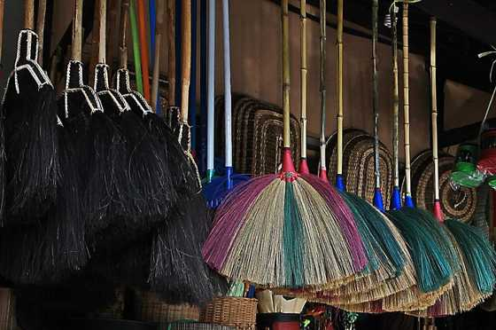
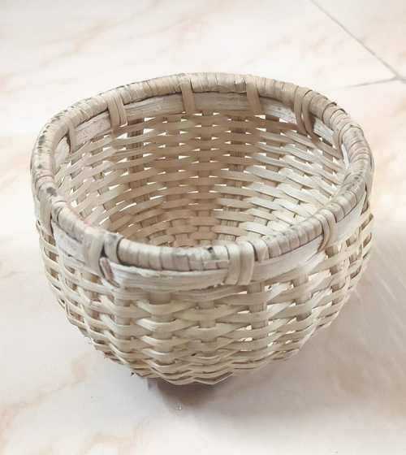
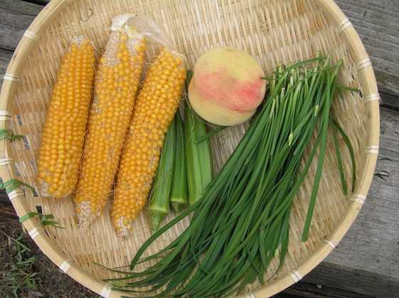
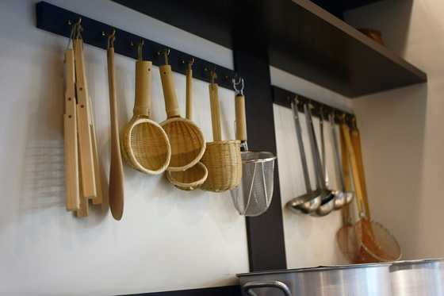
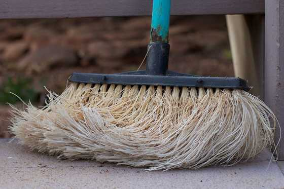
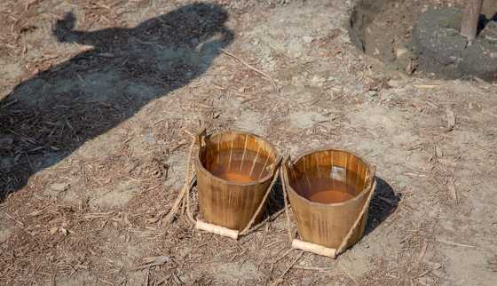
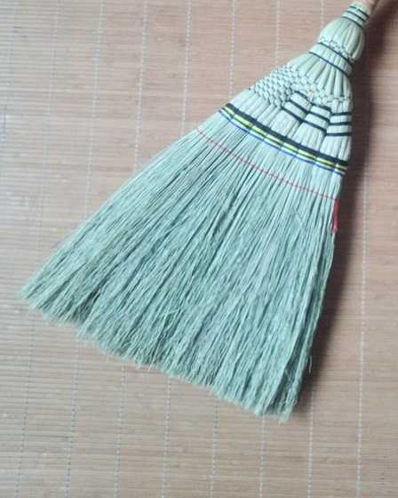
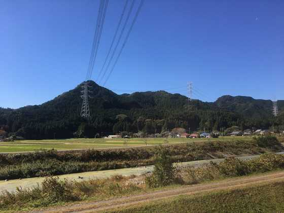
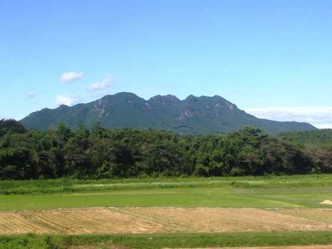
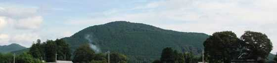

栃木県鹿沼市 ・ 創業約100年の荒物店
掃く、編む、運ぶ。
暮らしの道具を、手から手へ。
ほうき、かご、ブリキ。毎日使う道具を、長く使える顔で並べる荒物屋です。
お店のこと
福田 荒物店は、鹿沼市鳥居跡町にある荒物(日用雑貨)のお店です。新聞記事では創業から約100年の荒物店として紹介されています。店頭には、かごやかごバッグ、ブリキ雑貨、ほうき、ちりとりなどが並びます。
鹿沼ほうきは、農家の方がモロコシ(ほうきモロコシ)の原料から作るものとして、クチコミ紹介記事で触れられています。畳や板の間の掃除に向くと評されています。
情報源: 栃ナビ!(鹿沼箒の紹介) / 栃ナビ!(店舗情報) / 下野新聞 SOON(荒物屋の記事) / Instagram
上記の事実以外(見出しの言い回しなど)は制作側のイメージです。






口コミ
イメージ例
ほうきの穂先がきれいで、畳の掃除にちょうど良さそうでした。お店の方が使い方を教えてくれました。(ご来店のお客様)
イメージ例
かごがたくさん並んでいて、見ているだけで楽しい時間でした。駅から近くて寄りやすいです。(ご来店のお客様)
イメージ例
昔ながらの道具が揃っていて、贈り物にも選びました。(ご来店のお客様)
口コミは制作側が作成したイメージ例で、実在の声ではありません。
アクセス
| 住所 | 栃木県鹿沼市鳥居跡町1437 |
|---|---|
| 電話 | 準備中 |
| 営業時間 | 準備中 |
| 定休日 | 準備中 |
| SNS | Instagram @fukudaaramonoten |



掲載写真はフリー素材のイメージで、店舗の実際の様子・商品ではありません。他地域で撮影されたものを含みます。実際の写真は貴店ご提供のものに差し替えます。
写真クレジット
- ほうき(broom.jpg): Yoshibay / Public domain / 出典
- かご(basket.jpg): Maina Tudu / CC BY-SA 4.0 / 出典
- ブラシ(brush.jpg): cogdogblog (Alan Levine) / CC BY 2.0 / 出典
- 物干しのある路地(laundry.jpg、撮影地: 大阪市): m-louis .® / CC BY-SA 2.0 / 出典
- 木の桶(bucket.jpg、撮影地: 台湾): 總統府 / CC BY 2.0 / 出典
- 吊るされたほうき(hanging-brooms.jpg): Duduhsadarachmat / CC BY-SA 4.0 / 出典
- 田園の道(road.jpg、撮影地: 鹿沼市): Nesnad / CC BY 4.0 / 出典
- 竹の道具(bamboo-tools.jpg): haru__q / CC BY-SA 2.0 / 出典
- 縁側のかご(eaves.jpg、撮影地: 青梅市): Takashi .M / CC BY 2.0 / 出典
- 山と田園(band.jpg、撮影地: 鹿沼市栃窪): 駅弁 / CC BY 3.0 / 出典
- 竹ざる(zaru.jpg): Akiyoshi's Room / Public domain / 出典
- 田園と山(fields.jpg、撮影地: 鹿沼市): 駅弁 / CC BY 3.0 / 出典